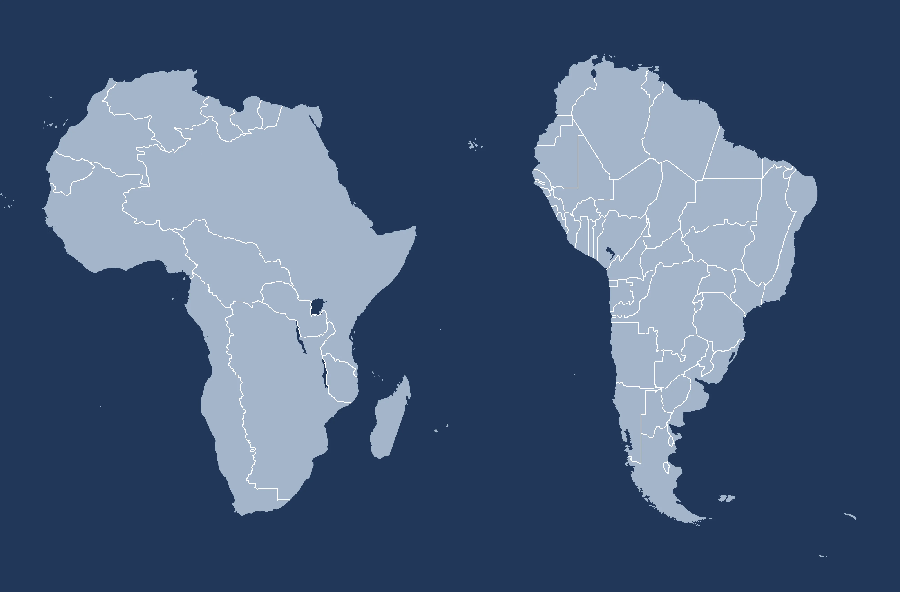

AMÉRICA DO SUL & ÁFRICA
COMPARAÇÃO

👇Informações aqui:
ÁFRICA &
AMÉRICA DO SUL
Este site se trata de um centro de informações e comparações entre os continentes "África" e "América do sul".
Nele vamos apresentar tópicos como:
- Extensões territoriais
- Biomas(fauna e flora)
- População
- Etnias
- Culturas
- Aspectos sociais
- Economia
- Política
| Referências
|
| Infoescola |
Brasil Escola |